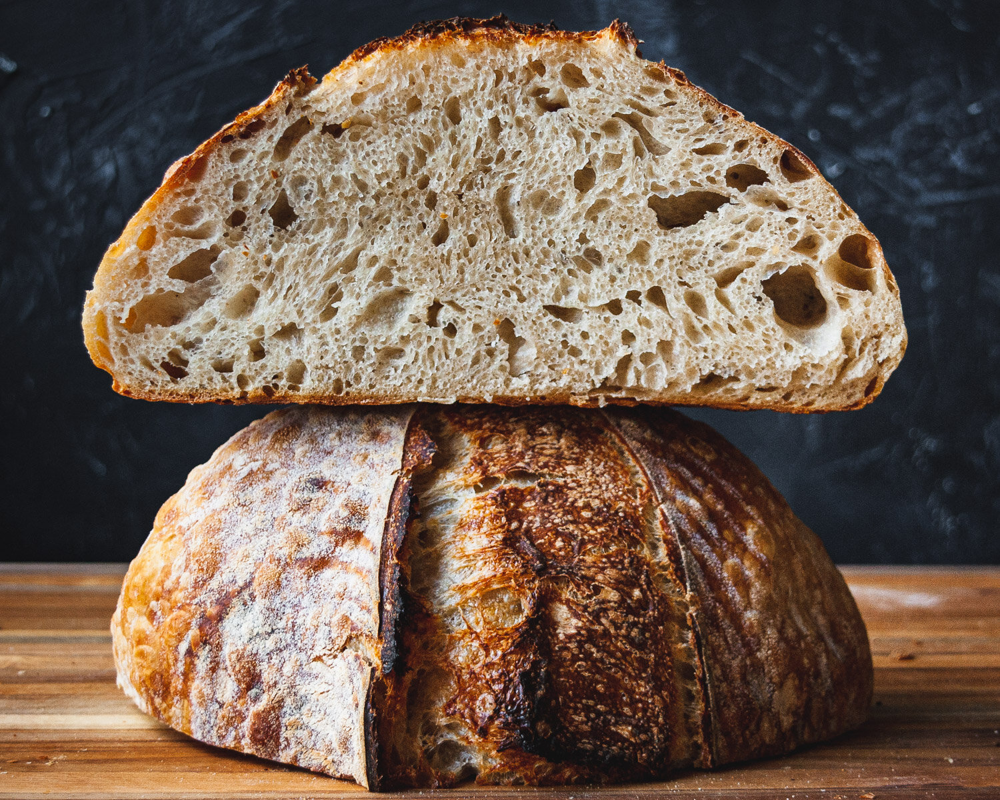

Sourdough

Description
Simple sourdough bread for the bread machine.
Ingredients
- 3/4 cup warm water (110 degrees F)
- 1 cup sourdough starter
- 1 1/2 teaspoons salt
- 2 2/3 cups bread flour
- 1 1/2 teaspoons active dry yeast
Steps
- Add all ingredients in order suggested by your manufacturer.
- Select white bread setting and push start.
back